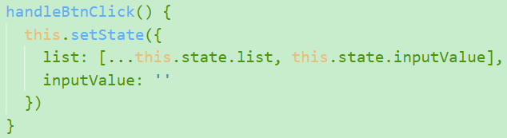
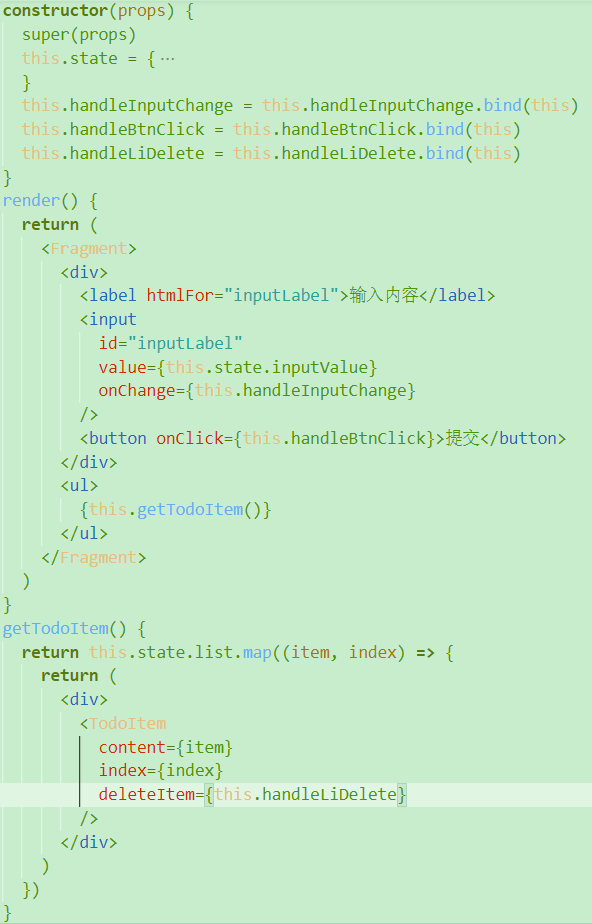
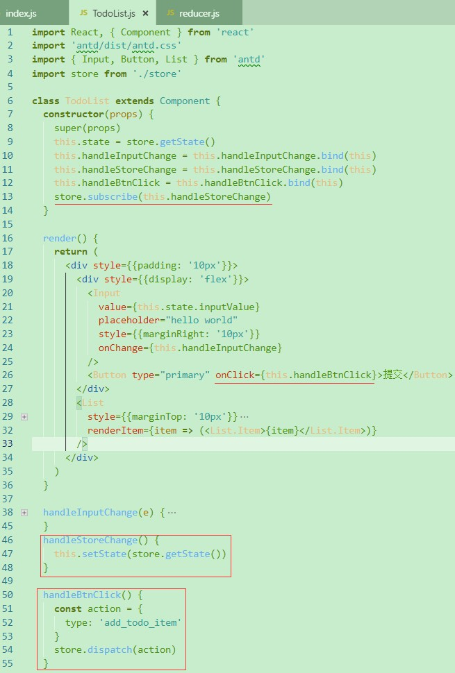
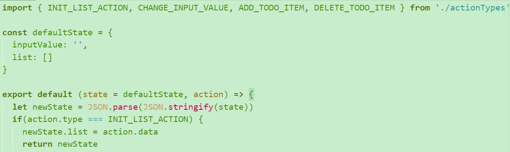

- 第1章 课程导学
- 第2章 react初探
- 第3章 react基础精讲
- 第4章 react高级内容
- 4-1 react开发调试工具developer-tools的安装和使用
- 4-2 prop-types与default-types的应用
- 4-3 props, state和render函数的关系
- 4-4 react中的虚拟dom-以下为react底层真正的实现
- 4-5 深入了解虚拟dom
- 4-6 虚拟dom中的diff算法
- 4-7 react中ref的使用
- 4-8 react的生命周期函数
- 4-9 react生命周期函数的使用场景
- 4-10 使用charles实现本地数据mock (模拟)
- 4-11 react中实现css过渡动画
- 4-12 react中使用css动画效果
- 4-13 使用react-transition-group实现动画
- 4-14 使用react-transition-group实现多个元素间的动画效果
- 第5章 redux入门
- 第6章 redux进阶
第1章 课程导学
第2章 react初探
2-1 react简介
2-2 react开发环境准备-安装
先安装node，再执行以下命令安装react脚手架工具：
1 | $ npm install -g create-react-app |
2-3 工程目录简介
src/index.js是整个程序的入口文件，react的设计理念是all in js，所以在js中可以引入index.css
serviceWorker实际是PWA（progressive web application），它的理念是让我们通过写网页的形式来写一些app的应用。
假设我们写了个网页并上线到一台支持https协议的服务器上，那么当用户第一次访问这个网页的时候需要连网才能看到，一旦断网了，如果项目引用了该文件，下次再访问也依然能看到之前的页面，因为会帮助存储在浏览器之内。
manifest.json是PWA serviceWorker存储的页面的快捷方式的配置。
精简后项目
App.js负责显示页面内容，index.js负责引入App并渲染到页面中。
2-4 react中的组件
App.js: 实际上是react的一个组件，所以必须引入component来生成组件。
1
2
3
4
5
6
7
8
9
10
11
12
13
14
15// component结构赋值引入：
import { Component } from 'react' // 等价于
import React from 'react'
const Component = React.Component
// 使用：
class App extends Component {
render() {
return (
<div>
hello
</div>
)
}
}
export default App以上render函数中的div标签使用的也是jsx语法，所以必须引入react才能正常编译。
index.js:
ReactDOM.render(<App />, document.getElementById('root'))将App组件挂载到id='root'的dom下，在public/index.html中。以上挂载组件
<App />使用的是jsx语法，所以必须引入react才能正常编译。
2-5 react中最基础的jsx语法
即在js中使用html原生标签或自定义组件标签（首字母大写）
第3章 react基础精讲
3-1 使用react编写todolist功能
render函数return的元素必须包在一个标签里如div，若不想让该标签显示，可以使用Fragment占位符：
3-2 react中的响应式设计思想和事件绑定
TodoList这个类必有构造函数constructor，当我们使用该组件时，constructor会最优先被执行；
因为TodoList组件继承了React中的Component组件，所以要在创建TodoList时要super即调用一次父类Component的构造函数，此句为固定代码，接收props参数和调用super(props)方法：
需要注意的点：

(1) 数据都放在state中；
(2) jsx中想用js的表达式要用{}包裹；
(3) 事件绑定时要用bind(this)对函数的作用域进行变更；
(4) 若想改变state中内容，需要通过setState函数。
3-3 实现todolist增和删功能
新增
删除
注意：React中有个immutable，即state不允许我们直接用this.state做任何改变，可以拷贝副本修改，再用setState赋值。
3-4 jsx语法细节补充
注释
1
2
3
4{/*注释内容*/}
{
// 注释内容
}在js文件中定义class，要使用className
如果需要解析标签，可以添加属性dangerouslySetInnerHTML：
label的for属性会被react误认为是for循环，要替换成htmlFor：
3-5 拆分组件与组件之间的传值
父组件向子组件传值
通过属性传递
子组件TodoItem.js：
父组件TodoList.js：
父组件向子组件传值后，子组件加click事件：
子组件TodoItem.js如下，使用constructor改变this指向以提高性能：
父组件向子组件传递方法：
父组件TodoList.js：

ps：此处的handleLiDelete一定要bind(this)让this指向父组件本身。
子组件TodoItem.js：
3-6 代码优化
TodoItem.js:
采用ES6的解构赋值进行优化：
优化前：
优化后：
TodoList.js:
将行内bind(this)的方法移到constructor中bind
html中涉及逻辑的代码最好都写成方法return出去
新版React建议setState方法用异步返回，可以提升性能：
(1) this.setState返回值的完整写法和缩写
(2) 注意此处的e.target.value需要存成一个变量，否则会报错;
(3) setState的参数prevState等价于this.state
3-7 围绕react衍生出的思考
- 声明式开发 – 不直接操作dom
- 可以与其他框架并存 – react挂载到index.html中id为root中，其他框架可以操作与之并列的dom，互不干扰
- 组件化
- 单向数据流 – 父组件允许向子组件传值，但子组件只能使用该值而不能改变它
- 视图层框架 – 大型项目中需要借助数据层框架如flux、redux传值
- 函数式编程
第4章 react高级内容
4-1 react开发调试工具developer-tools的安装和使用
安装需要翻墙啊啊啊~~
4-2 prop-types与default-types的应用
propTypes – 限制父组件给子组件传的值的类型
defaultProps – 在某些情况下某个父组件给子组件传不了某个属性如test，但子组件中又要求test是必填的，就会用到defaultProps
(1) prop类型通常有array数组、bool布尔值、func函数、number数字、object对象、string字符串、symbol、node和element
(2) 如果该属性既可以是string，也可以是number，可以用oneOfType，即
content: PropTypes.oneOfType([PropTypes.string, PropTypes.number]) 参考网站：https://reactjs.org/docs/typechecking-with-proptypes.html
4-3 props, state和render函数的关系
- 当组件的state或props发生改变时，render函数就会重新执行；
- 当父组件的render函数被运行时，它的所有子组件的render函数都将被重新运行一次
4-4 react中的虚拟dom-以下为react底层真正的实现
所以，虚拟DOM是什么？
本质上它就是个JS对象，它之所以能提高性能，本质上是因为在JS里比较JS对象不怎么耗性能，但是比较真实的DOM很耗性能。
4-5 深入了解虚拟dom
在渲染JSX模板时，会经历JSX模板->createElement方法->虚拟DOM(JS对象)->真实的DOM
虚拟DOM的优点：
- 性能提升了 – DOM的比对变成了JS对象的比对
- 它使得跨端应用得以实现 – React Native (回头反复看)
4-6 虚拟dom中的diff算法
- 在4-4的第7步中当state或props改变后，比较原始虚拟DOM和新的虚拟DOM的差异，就叫做Diff算法
- setState之所以要异步，就是可以把多次setState结合成一次，减少虚拟DOM比对的次数
- React的虚拟DOM是同层比对的，如果一层不满足匹配的要求，下面就不会再比对了，直接用新的替换掉老的，提升性能
- 循环中之所以要求有key值，就是提高虚拟DOM比对的性能，尽量不要用index做key值，可以用item
4-7 react中ref的使用
ref能代替e.target，但react中尽量不要来操作DOM

ref与setState合用时会有问题，解决办法就是要把ref获取DOM的方法放到setState回调函数里执行：
4-8 react的生命周期函数
概念
生命周期函数是指在某一个时刻组件会自动调用执行的函数
详细讲解
Initialization初始化过程
初始化数据state和props，具体是在constructor中：
Mounting挂载过程
当组件第一次被挂载到页面中，会有三个生命周期函数：
(1) componentWillMount
当组件即将被挂载到页面的时刻自动执行
(2) render
挂载页面；但是在state和props改变时，render还会自动执行
(3) componentDidMount
组件被挂载到页面之后自动执行
Updating组件更新过程
当props或states改变时，有以下四个共同的生命周期函数：
(1) shouldComponentUpdate
组件被更新之前自动执行，该组件必须返回布尔值，否则会报错；
返回true组件会被更新，返回false组件将不会被更新；
此函数会在render之前执行。
(2) componentWillUpdate
组件被更新之前会自动执行，但是它在shouldComponentUpdate之后执行；
如果shouldComponentUpdate返回true，它才会被执行，返回false，就不会执行。
(3) render
props或states更新时，重新渲染虚拟DOM和真实DOM，更新页面
(4) componentDidUpdate
组件更新完成后被自动执行
当props改变时，会先经历一个独有的生命周期：
componentWillReceiveProps
当一个子组件从父组件接收了参数，只要父组件的render函数被重新执行了，它就会被执行，即如果该子组件第一次存在于父组件中，不会执行，但如果该子组件之前已经存在于父组件中，才会执行
Unmounting把组件从页面去除的过程
componentWillUnmount
当这个组件即将被从页面中剔除的时候自动执行
4-9 react生命周期函数的使用场景
除了render函数，其他生命周期函数都可以不存在，因为组件继承自React.Component，它里面默认内置了其他所有生命周期函数，唯独没有render函数。
shouldComponentUpdate的应用场景
因为父组件render函数发生改变，子组件也会重新render，这会大大影响性能，可以在子组件中用shouldComponentUpdate函数进行限制：
总结React中提升性能的做法：
方法改变作用域，在constructor中操作，这样可以保证整个函数中的作用域绑定只会执行一次，而且可以避免子组件的一些无谓渲染。
setState方法内置了性能提升的机制，它是个异步的函数，可以把多次数据的改变结合成一次做，降低了虚拟DOM的比对频率。
React底层用虚拟DOM的概念、同层比对和key值，来提升虚拟DOM比对的速度。
借助shouldComponentUpdate函数避免无谓的组件的render函数的运行。
在componentDidMount函数中发送ajax异步请求，绝对不能放在render函数中，因为componentDidMount只在组件被挂载到页面后执行一次，之后便不再重新执行了；
不在componentWillMount中发送请求，是因为它可能会和React的更高端的技术产生冲突。
axios发送异步请求
安装
$ npm install axios –S然后重启服务使用
4-10 使用charles实现本地数据mock (模拟)
它是中间的代理服务器，能够抓到浏览器的请求。
下载安装 https://www.charlesproxy.com/latest-release/download.do
配置步骤
工具栏tools
Map Local
点击Add
配置
点击choose选择某个目录下的xxx.json文件
点击OK，即可在页面中使用‘/api/todolist‘接口了
调接口
4-11 react中实现css过渡动画
4-12 react中使用css动画效果
4-13 使用react-transition-group实现动画
安装
$ npm install react-transition-group --saveCSSTransition
先引入
包裹在要动画的元素外，必须要设置以下属性：
in对应要改变的数据，才能向行间增加样式
timeout动画要执行多久
classNames定义样式名前缀
unmountOnExit当fade-exit后会把dom移除
钩子函数onEnter, onEntering, onEntered, onExit, onExiting, onExited。例如：
定义样式
入场动画：
(1) .fade-enter 刚要入场但尚未入场时
(2) .fade-enter-active 从入场动画执行的第二个时刻到入场动画执行完成之前的阶段
(3) .fade-enter-done 当整个入场动画执行完成后
出场动画
(1) .fade-exit 出场动画执行的第一个时刻
(2) .fade-exit-active 出场动画执行的过程
(3) .fade-exit-done 当整个出场动画执行完成后
怎么使页面刚加载时就执行一遍动画呢？
需要引用属性appear={true}，并设置相应的样式
当使用CSSTransition实现不了某个动画时，可以查下Transition，基本能实现需求：
https://reactcommunity.org/react-transition-group/transition
4-14 使用react-transition-group实现多个元素间的动画效果
TransitionGroup和CSSTransition配合使用：
TransitionGroup写在所以的React组件外部，而CSSTransition写在具体的某个React组件或元素的外部，对一个元素或组件进行动画效果的管理。
注意CSSTransition中的属性in就不需要了。
第5章 redux入门
5-1 redux概念简述
Redux把组件中的数据放到一个公用的存储区域store里存储，该组件改变数据，其他组件会感知到store里的数据改变，然后就能取到改变后的数据。
Redux = Reducer + Flux
Flux是官方推出的最原始的辅助React使用的数据层框架，缺点：数据存储区域store有很多个，可能在存储时存在数据依赖问题。
5-2 redux的工作流程
Redux Flow
- React Components指页面上的每个组件
- Store指存储数据的公共区域
- 举例：这是个图书馆，React Components代表每一个借书的用户；用户对管理员说‘要借什么书’这句话，这就是Action Creators；Store就是指管理员；管理要从他的记录本查你这本书，这个记录本就是Reducers；记录本就告诉了管理员那本书在哪，管理员找到后就把书借给了用户。
5-3 使用ant-design实现todolist页面布局
安装
$ npm install antd –save重启使用
5-4 创建redux中的store
安装redux
$ npm install redux --save使用的步骤：
创建‘笔记本’store/reducer.js，导出的必须是函数
在src下新建store/index.js，引入redux中的createStore方法，并把‘笔记本或仓库’中的记录传给store，此时store已经完整的存在了
组件连接store，并从中取用数据
5-5 action和reducer的编写
redux开发者工具的安装与配置
使用shadowsocks翻墙
在chrome网上应用商店找到redux devtools安装
在调试栏打开redux选项，提示No store found，需要进一步配置store/index.js
window.__REDUX_DEVTOOLS_EXTENSION__ && window.__REDUX_DEVTOOLS_EXTENSION__()配置完成后，呈现这样的面板
改变页面input框数据，怎样才能改变store中的数据呢？
前提条件是当input中数据改变时，才改变store中的数据

把action当作‘借书人对管理员说的那句话’，创建action
把‘这句话’即action传给store
store会自动拿着当前state的数据和当前的action去‘查手册’，即传给reducer，所以reducer能接收到以下的state和action
所以，这里的state指store里上一次存储的数据，action指用户传过来的‘那句话’
reducer根据action的type，先深拷贝state，再把其中的inputValue改成新传来的action中的value，最后把新的state即newState返回给store
(1) reducer可以接收state，但不能直接修改state
(2) 注意不符合条件时要返回state，否则会严重报错
组件根据store中的新数据进行更新，先订阅store，即只要store里数据发生改变，subscribe订阅的函数就会自动执行，在该函数中就可以先调用getState方法从store中重新取数据，然后用setState替换掉当前组件中的数据
小栗：点击提交，列表新增数据，巧妙地运用store中数据

5-6 使用redux完成todolist的删除功能
5-7 action-types的拆分
在store中新建actionTypes文件，定义常量，并在相应文件中使用。
拆分的意义：
定义成actionTypes常量，如果在使用时写错，工作台会有报错，但普通字符串就看不出来报错。
5-8 使用action-creator统一创建action
优点：便于维护、便于自动化测试。
5-9 redux知识点复习补充
Redux设计和使用的三项原则
store是唯一的
只有store能够改变自己的内容
Reducer必须是纯函数，纯函数指的是，给定固定的输入，就一定会有固定的输出，而且不会有任何副作用。
换言之：
(1) 如果函数中有日期函数、ajax请求或setTimeout等，就不是纯函数。
(2) 纯函数绝不能直接对参数做出修改。
Redux的核心API
- createStore创建store
- store.dispatch方法：派发action，这个action会传递给store
- store.getState方法：获取store中所有的数据内容
- store.subscribe方法：订阅store的改变，只要store发生改变，该函数接收的回调函数就会被执行
第6章 redux进阶
6-1 ui组件和容器组件
UI组件负责页面的渲染
容器组件负责页面的逻辑，即不管里面有多少UI组件，它只管处理逻辑
6-2 无状态组件
当一个组件只有一个render函数，没有其他东西时如TodoListUi组件，就可以用无状态组件来定义它，所以TodoListUi组件可以改写成：
无状态组件比普通组件性能更好，建议当UI组件只有render函数时，将其定义成无状态组件。
6-3 redux中发送异步请求获取数据
Step1: 用charles工具配置接口
Step2: 在TodoList.js中通过axios调用该接口
Step3: 因为要修改store中数据，所以先在actionCreators.js中定义方法，返回action
Step4: 回到TodoList.js，在请求回调中dispatch该action
Step5: 在reducer.js中用action中新数据替换旧的已被克隆的state，并返回state

6-4 什么是redux的中间件
- 未完待续……